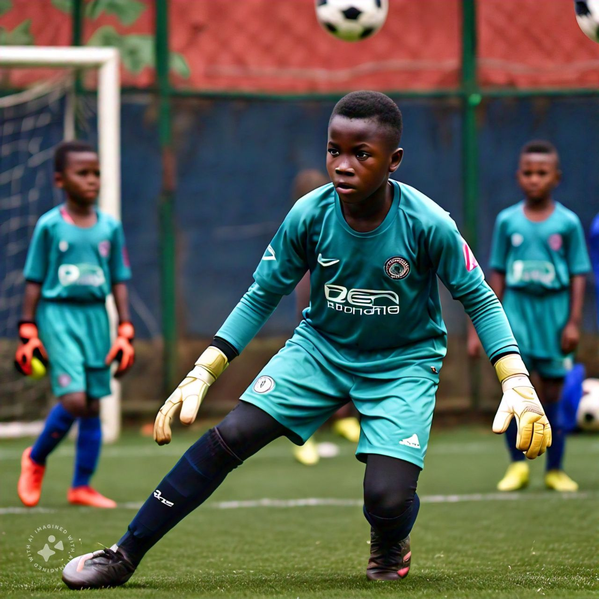

HOME
TRAININGS
TEAMS
ABOUT US
CONTACT
HOME
TRAININGS
TEAMS
ABOUT US
CONTACT
At AKTEN Academy, we’re dedicated to helping young footballers reach their full potential. Our training programs are designed to develop the technical, tactical, physical, and mental skills needed to succeed in football. With a focus on expert coaching, small-sided games, and player-centered learning, we create an environment that fosters growth, creativity, and success.
1. Technical Training: Develop your skills in dribbling, passing, shooting, and more with our expert coaches.

2. Tactical Training: Learn team shape, positioning, and strategy with our experienced coaching staff.
3. Physical Training : Improve your fitness, agility, and endurance with our high-intensity training sessions.
4. Goalkeeper Training : Specialized training for goalkeepers, focusing on technique, agility, and decision-making.

5. Small-Sided Games: Develop your skills in game-like situations with our small-sided games approach.
6. Video Analysis: Gain insights into your game with our video analysis technology.
1. Player-Centered Learning: Our coaches adapt their coaching style to meet the needs of each player.
2, Game-Based Learning: We use small-sided games to teach players how to apply their skills in game-like situations.
3. High-Intensity Interval Training: Improve your fitness and endurance with our high-intensity training sessions.
4. Video Analysis: Use technology to gain insights into your game and improve your performance.
1. Frequency and Duration: Training sessions are held five (5) times per week, lasting four (4) hours.
Monday – Thursday: 8am – 12pm
Saturday: 7am – 11am
2. Age-Specific Training: Training times are tailored to specific age groups to ensure players are training with peers.
3. Specialized Training: We offer specialized training sessions for goalkeepers and players with specific needs.
1. Pitch Quality and Size: Our pitches are very large and are both grass pitches and artificial pitches to ensure optimal playing conditions.
1. Technical Skill Development: Improve your skills in dribbling, passing, shooting, and more.
2. Tactical Awareness: Develop your understanding of team shape, positioning, and strategy.
3. Physical Fitness: Improve your fitness, agility, and endurance.
4. Mental Toughness: Develop your resilience, focus, and teamwork skills.
“AKTEN Academy has helped me improve my skills and confidence.” – [Khalid Yakubu].
“The coaching staff are experienced and knowledgeable.” – [ Mr. Khalil Aliyu ].